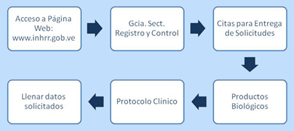

|
Esta solicitud consiste en un proceso de revisión de la información contenida en una serie de documentos que respaldan legal, técnica y bioéticamente la ejecución de una investigación en Farmacología Clínica en las personas, a fin de obtener información sobre la utilidad profiláctica, terapéutica o de diagnóstico de principios activos y medicamentos, así como también el mecanismo de
acción, los parámetros farmacológicos que determinan su efectividad, riesgos y sus efectos adversos, garantizando la
protección física y moral de las personas que han consentido su participación en el mismo.
Para obtener la Autorización de un Protocolo Clínico para Producto Biológico y así realizar un Estudio en Farmacología
Clínica en la República Bolivariana de Venezuela, se debe cumplir con los requisitos establecidos en el Formulario F-RCPB-064 e Instructivo, de Solicitud de Autorización de Protocolo Clínico para Producto Biológico, de conformidad con:
La Declaración de Helsinki, la Constitución de la República Bolivariana de Venezuela, la Ley del Ejercicio de la Medicina, el
Código de Deontología Médica, la Ley del Medicamento, las Normas de la Junta Revisora de Productos Farmacéuticos y su Reglamento en Farmacología Clínica, la Norma para el Registro Sanitario, Liberación de Lotes y Control de los Productos Biológicos, las Normas de la Buena Práctica Clínica (CIARM-ICH), sobre requerimientos técnicos para el Registro de Productos Farmacéuticos para el uso en humanos y las Pautas Éticas Internacionales para la Investigación Biomédica en seres humanos (CIOMS - OMS).
La Solicitud de Autorización de Protocolo Clínico para Producto Biológico es realizada mediante el formulario F-RCPB-064, el cual es vigente desde Noviembre de 2009, y puede ser encontrado en la sección de Formularios de Servicios de esta página Web.
El Formulario F-RCPB-064, de Solicitud de Autorización de Protocolo Clínico para Producto Biológico posee un instructivo de llenado que sirve de guía al solicitante para llenar y completar correctamente la información solicitada.
Los pasos a seguir para presentar la Solicitud de Autorización de Protocolo Clínico para Producto Biológico (PC-PB) son los siguientes:
- Ingresar en la página Web del Instituto Nacional de Higiene "Rafael Rangel" (INH"RR") www.inhrr.gob.ve. Enlazar Productos Biológicos y obtener el formulario F-RCPB-064 Solicitud de Autorización de Protocolo Clínico para Producto Biológico y el instructivo del mismo, ó solicitar dicho formulario e instructivo a través del correo electrónico de la División de Control Nacional de Productos Biológicos divcnpb@inhrr.gob.ve.
- El formulario F-RCPB-064 debe ser llenado completamente sin dejar espacios en blanco. De no aplicar con un requisito colocar NO APLICA (N/A).
- Preparar los anexos, ordenarlos, separarlos e identificarlos con la sigla correspondiente al recaudo, ejemplo:
- PP-1: Constancia de conocimiento y Autorización por parte del propietario del Producto en Estudio.
- PT-1: Constancia de responsabilidad del Patrocinador.
- Incluir los recaudos solicitados en carpeta(s) tipo OSLO, identificadas en su exterior con el color Violeta. En caso de emplear más de una carpeta para los anexos a remitir, deberá anexar una copia del formulario F-RCPB-064 en cada una de las carpetas.
- Los anexos que avalan la solicitud deberán ser presentados en físico y digitalizados por duplicado en formato PDF, archivados en 2 CD independientes.
- Los recaudos correspondientes al anexo 16, deben ser presentados en una carpeta OSLO independiente, cumpliendo con las instrucciones anteriores.
- Si algún recaudo solicitado está incluido en un documento insertado en otro apartado, indicar el lugar de ubicación.
- Aplicar la tarifa correspondiente de 103,40 BsF según la Gaceta Oficial de la República Bolivariana de Venezuela N° 36.517 del 14/08/1998 para Evaluación de Protocolos de Investigación Clínica, y efectuar el depósito en la cuenta corriente del Instituto Nacional de Higiene "Rafael Rangel", Nº 0102-0132-28000869-9691, Banco de Venezuela. No se aceptaran depósitos con un monto mayor o menor al indicado.
- Inutilizar timbres fiscales por un valor de 0,02 UT por página del formulario. Deben inutilizarse todos los espacios que queden en blanco en el formulario.
- Solicitar una cita para la entrega de la solicitud, en el vínculo correspondiente.

- El día de la cita, diríjase a la División de Control Nacional de Productos Biológicos, en la Ciudad Universitaria, U.C.V., Los Chaguaramos, detrás del Hospital Universitario de Caracas, Instituto Nacional de Higiene "Rafael Rangel", 2° piso del edificio sede. El personal del Departamento de Evaluación de Protocolos Clínicos para Productos Biológicos, revisará la solicitud presentada a fin de constatar la presencia de todos los recaudos exigidos, aplicando una lista de chequeo. No se aceptarán solicitudes que presenten recaudos faltantes o algún tipo de enmienda en el Formulario de Solicitud y/o documentos anexos. El solicitante debe tener copia del depósito bancario realizado, e incluir el original adherido al formulario que se ingrese a la primera carpeta, así como también el comprobante de la cita asignada.
- El personal del Departamento de Evaluación de Protocolos Clínicos para Productos Biológicos una vez revisada la solicitud, le asigna un número, sella el formulario, coloca la fecha de recepción y devuelve al Patrocinador/Representante del Patrocinador una copia del formulario sellado (sin anexos) y de la lista de chequeo, como constancia de recepción de la solicitud.
- El Departamento de Tesorería del Instituto Nacional de Higiene "Rafael Rangel", emitirá una factura por el costo del pago efectuado, que le será entregado posteriormente al solicitante, conjuntamente con la notificación de admisión del Protocolo Clínico.
- En cinco (5) días hábiles se le estará entregando al Patrocinador/Representante del Patrocinador la Notificación de Admisión de la Solicitud de Autorización de Protocolo Clínico para Producto Biológico.
- En los actuales momentos el tiempo estimado para dar respuesta a una Solicitud de Autorización de Protocolo Clínico para Producto Biológico es de aproximadamente 120 días.
|